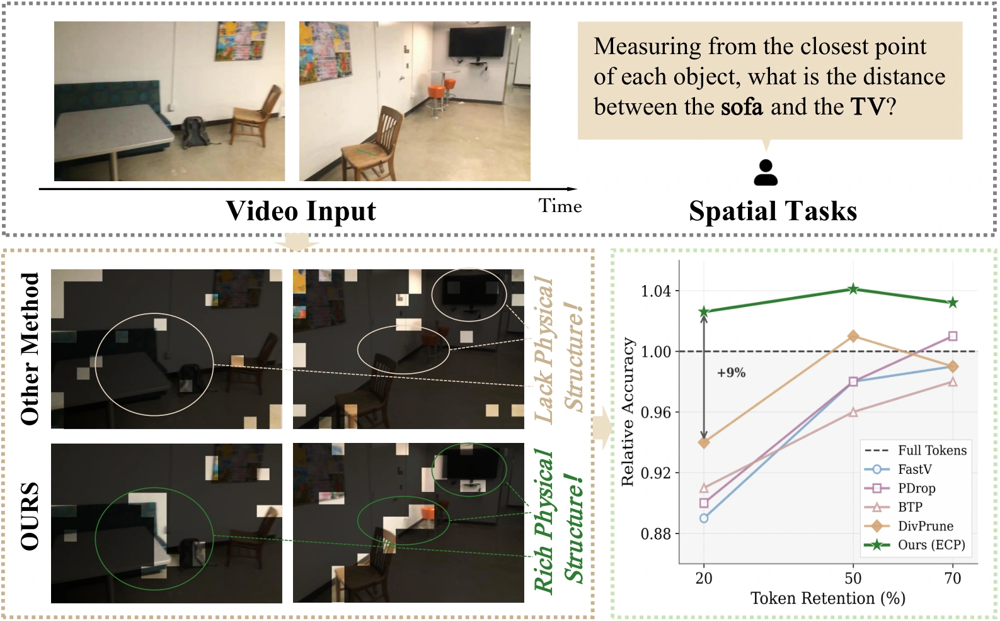

EventPrune: Cascaded Event-Assisted Token Pruning for Efficient First-Person Dynamic Spatial Reasoning
NeurIPS 2026 · Accepted
EventPrune uses event-derived motion cues to prune redundant visual tokens in vision-language models. Its cascaded framework reduces inference cost while retaining the information needed for first-person dynamic spatial reasoning.